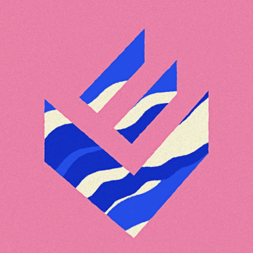
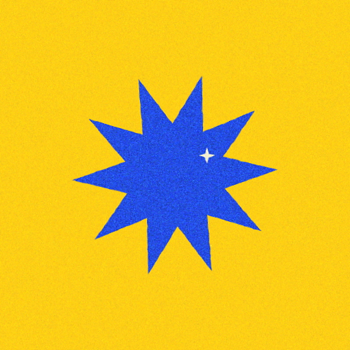
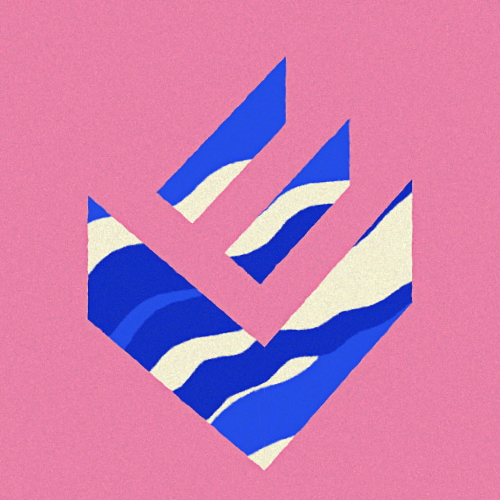
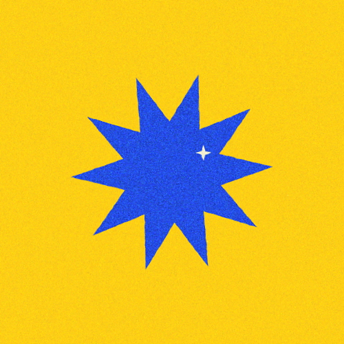

My personal work in animations, colors, and drawing is incredibly important to me. At my desk… My latest personal project was inspired by the book: Logo Modernism, Jens Müller. This book is actually my husband’s book, but as it stands on my desk I got inspired by all the amazing and simple shapes it presents. I got the idea to choose the most interesting to me and create two simple words with it.
Check more about the process hier.